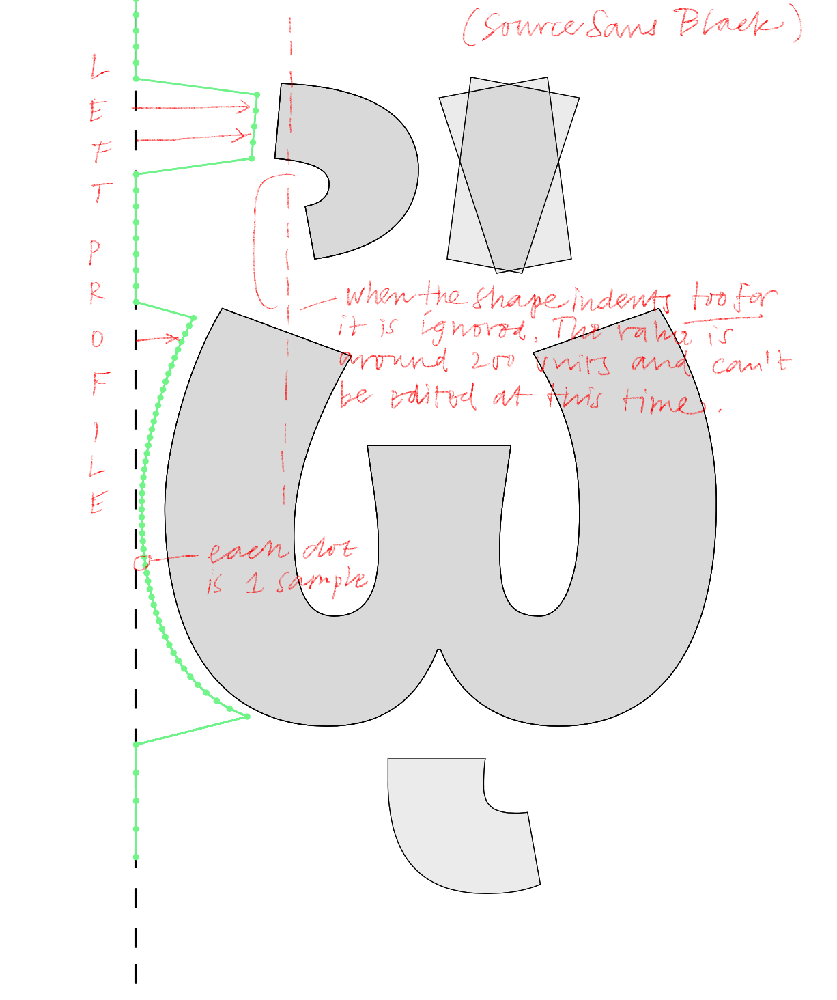

LTR Similarity
Experimental tool for exploring the similarities between glyphs
Before you start:
For this extension to work, you need to install numpy with the Python / Install Python Packages menu. And then type numpy and return.

Usage
- Open a Glyph window, then pick Similarity from the extensions menu - the Similarity window will appear.
- The columns named Score and Score Right show the similarity score. This is a value that indicates how similar the profiles are. You will notice that only values very close to 1 make sense.
- The columns named Category and Range show the Unicode category and Unicode Range name. If selected, the list will only show the glyphs in the same category or range as the current glyph.
- Selecting a glyph in the list will draw that glyph in the background of the current glyph. Selected glyphs that matched on the left are drawn in red. Glyphs that matched on the right are drawn in blue.
- Threshold slider and value: set a threshold on the minimum similarity score you see in the list.
- Clip slider this value determines how deep the profiles are measured. Higher values might be useful for wider designs. Smaller values might be useful for narrower designs. So far a value between 100 and 200 seems fine. Changes to the clip value will cause all calculations to be done again.
- Zone checkboxes: a rough way to control which vertical zones are included in the comparison. So if "Above xHeight" is checked, differences above the xheight will be noticed.
- Select a glyph in the list Glyphs similar on the left are drawn on the left side of the current glyph. Blue for glyphs similar on the right. The dashed line indicates where the profiles are clipped.
- Double click on a glyph in the list to jump to that glyph in the editor. The Similarity window will refresh and show the similarities with the new glyph.
- SpaceCenter button will open a new spaceCenter and show the glyphs selected in the list.
- Select button selects the glyphs selected in the list, in the font window.

Why
Well, it is an pretty objective way of analysing shapes. So there may be some use for it. Using it myself I notice some results are counter intuititve - but this is because we like to work with glyphs that are clustered along semantic rules. "All the a accents". And those are not the same as the geometric similarities this thing finds. It is quite useful for finding irregularities between glyphs. That's not to say it all needs to be the same!

How
- This works by calculating a profile, a list of horizontal measurements at different heights for each side of each glyph. The green dots on the image above show a left profile. Calculating these profiles will take a noticable amount of time at first, after that the values are stored and only recalculated when a glyph actually changes.
- The profiles are normalized, the average of all values is substracted from each value. So the profiles shift a bit. If there is a bit that stick out, the average will be different and the profile will normalize slightly different from a shape that does not stick out.
- Then the cosine similarity value, the "similarity score", can be calculated for two corresponding sides in different glyphs. This is pretty quick, thanks to numpy.
- You will see that only values very close to 1.00 still make sense. But you can play with the Threshold slider to discover where all the glyphs are. Note that accents above glyphs can substantially change the profile. So while we may expect /a and /aacute to be very similar, the profiles might be different enough to rank further apart.
-
Accuracy: this is a game of statistics. Things that are similar are not the same. It will score some shapes higher than a person would. It might leave out glyphs that we would include. Whether a glyph is marked Green or Yellow is another level of interpretation. And yet, it has been a useful tool in nagivating the complex inner-consistencies of fonts. Use it wisely.
Version
- Experimental release 1.2.4
- There will be bugs and unacceptable errors in thinking.
Thanks
- Lars van Blokland
- Frederik Berlaen
- Tal Leming
- Frank Grießhammer
- My GitHub Sponsors who make this kind of research possible - thank you!